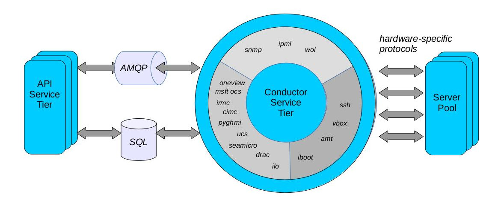
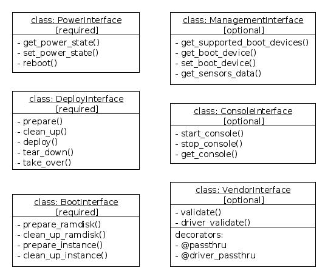

Ironic
A Cloudy Approach
to Hardware
Devananda van der Veen
github.com/devananda/talks
- Cloud Architect @ IBM / SoftLayer
HP Cloud- OpenStack since 2012
- Yoichi single malt
- @devananda
Virtualization & Cloud Computing
DevOps & OpenStack
a physical machine behaves like a virtual machine.

nova boot \
--flavor baremetal.high_mem \
--image Ubuntu_Trusty \
--key-name my_keypair \
my_high_mem_server for PXE boot & install OS
* every company that owns hardware
However, binary image copy
improves repeatability, reduces entropy
improves repeatability, reduces entropy
Architecture
Service Components
Standard Protocols
Power- IPMI: intelligent platform management interface, for remote control of machine power state, boot device, serial console, etc.
- SNMP: simple network management protocol, often used with Power Distribution Units for remote control of power status.
Standard Protocols
Boot- DHCP: dynamic host configuration protocol, used to locate the NBP on the network, and provide the host OS with IP address during init
- TFTP: trivial file transfer protocol, copies the NBP over the network
- PXE: pre-boot execution environment, allows host to boot from network
- [g,i]PXE: recent enhancements make PXE more flexible, supported on most hardware
DMTF just published "Redfish" spec ...
but ...
but ...
hardware, services, support, and integration
not from proprietary solutions to common problems
Driver API
consistency → repeatability
GET /v1/nodes/
{
"nodes" : [
{
"name" : "nuc",
"maintenance" : false,
"instance_uuid" : null,
"power_state" : "power off",
"uuid" : "ba031dea-e7a8-4917-89f1-0f3ad31344ee",
"provision_state" : "available"
"links" : [
.... snip ....
],
},
]
}
GET /v1/nodes/ba031dea-e7a8-4917-89f1-0f3ad31344ee
{
"name" : "nuc", # human readable name
"uuid" : "ba031dea-e7a8-4917-89f1-0f3ad31344ee", # canonical reference
"driver" : "pxe_amt", # hardware driver
"properties" : { # hardware characteristics
"ram" : 8096,
"cpu_arch" : "x86_64",
"cpus" : 2,
"disk_size" : 500
},
"driver_info" : { # driver management data
"amt_password" : "******",
"amt_address" : "192.168.2.3",
"amt_username" : "admin"
},
"power_state" : "power off", # last known power state
"target_power_state" : null, # non-null if change requested
"provision_state" : "available", # current provision state
"target_provision_state" : null, # non-null if change requested
"instance_info" : { # parameters for the next instance
"root_gb : 100,
"image_source" : "http://192.168.2.100/images/my-image.qcow2"
},
"instance_uuid" : null, # external reference for instance
"maintenance" : false, # "release valve" for hardware maintenance
"maintenance_reason" : null, # optional explanation
"last_error" : null, # last error encountered by driver
"console_enabled" : false, # serial console status
"extra" : {}, # ignored by Ironic
"inspection_started_at" : null, # exposed timing data
"inspection_finished_at" : null, # exposed timing data
"created_at" : "2015-05-14T16:46:26+00:00", # exposed timing data
"updated_at" : "2015-06-02T19:37:32+00:00", # exposed timing data
"provision_updated_at" : null, # exposed timing data
"reservation" : null, # exposed lock status
"clean_step" : {} # exposed driver status
"driver_internal_info" : { # exposed driver status
"amt_boot_persistent" : true,
"amt_boot_device" : "disk"
},
...
}and requires different
driver_infoOperations
However...
- Parallel deploys can saturate network
- Periodic health checking can be delayed by bad BMCs
- Nova scheduler does resource selection in Python
- Neutron DHCP config reload is slow
Is there a simple alternative?"
Yes
Run Ironic straight from Ansible.
Run Ironic straight from Ansible.
input environment vars
$ cat bifrost/playbooks/inventory
---
node_default_network_interface: eth0
network_interface: eth2
ipv4_subnet_mask: 255.255.255.0
ipv4_gateway: 192.168.1.1
ipv4_nameserver: 8.8.8.8
dhcp_pool_start: 192.168.2.200
dhcp_pool_end: 192.168.2.250
deploy_kernel: "{{http_boot_folder}}/coreos_production_pxe.vmlinuz"
deploy_ramdisk: "{{http_boot_folder}}/coreos_production_pxe_image-oem.cpio.gz"
deploy_image_filename: "deployment_image.qcow2"
deploy_image: "{{http_boot_folder}}/{{deploy_image_filename}}"
external dependencies & environment prep
$ bash ./scripts/env-setup.sh
$ source /opt/stack/ansible/hacking/env-setup
$ cd playbooks
$ ansible-playbook -K -vvvv -i inventory/localhost install.yamlwith an inventory file
$ ansible-playbook -vvvv -i inventory/localhost enroll.yaml \
-e baremetal_csv_file=baremetal.csv$ ironic node-create -d agent_amttool -n nuc \
-i amt_password='Pa$$w0rd' -i amt_address='192.168.2.3' -i amt_username='admin' \
-p cpu_arch=x86_64 -p local_gb=64 -p memory_mb=8192 -p cpus=2 \
-i deploy_ramdisk='http://192.168.2.2:8080/coreos_production_pxe_image-oem.cpio.gz' \
-i deploy_kernel='http://192.168.2.2:8080/coreos_production_pxe.vmlinuz'
$ ironic port-create -n $UUID -a ec:a8:6b:fe:e1:b0from the inventory file
or hit all inventory in Ironic
$ ansible-playbook -vvvv -i inventory/bifrost_inventory.py \
deploy-dynamic.yaml
Demo?
Q & A?
Thanks!
@devananda
devananda.github.io/talks
github.com/openstack/ironic
github.com/openstack/bifrost